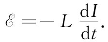
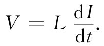

在对图17-8或17-9的两个线圈中的感生电动势进行讨论时，我们仅仅考虑了其中一个线圈中电流的情况。如果两个线圈中同时载有电流，则耦合到每一线圈的磁通量就将是那些分开存在着的两个通量之和，因为叠加定律对于磁场是适用的。因此，每个线圈中的电动势不仅正比于另一线圈中的电流变化，而且也正比于该线圈本身的电流变化。于是，在线圈2中的总电动势就应当写成 [2]
同理，线圈1中的电动势将不仅依赖于在线圈2中的变化电流，而且也依赖于本身的变化电流：
系数M22 和M11 都永远是负数，通常被写成
M11 =-L1 ，M22 =-L2 ， （17.33）
其中L1 和L2 分别称为两个线圈的自感 。
当然，即使仅有一个线圈，自感电动势依然存在。任一线圈因自身的原因都有一个自感L。电动势将正比于其中电流的变化率。对于单个线圈，通常采取这样的惯例，即如果电动势与电流的方向相同，那它们就被认为是正的。按照这种惯例，我们可以把单个线圈的电动势写成
 （17.34）
负号指明该电动势反抗电流的变化——故常称为“反电动势”。
由于任何线圈都有反抗电流变化的自感，所以线圈里的电流就有一种惯性。事实上，如果想要改变线圈里的电流，就必须把线圈接至某一电池组或发电机的外电压源来克服这一惯性，原理图如图17-10（a）所示。在这样一个电路中，电流I按照如下关系依赖于电压V：
 （17.35）
图17-10 （a）含有一电压源和一自感的电路；（b）类似的机械系统
这一方程与粒子在一维中情况下的牛顿运动定律具有相同形式。因此，我们可以按“相同的方程具有相同的解”的原则来对它进行研究。这样，若把外加电压V对应于所加的外力F，而把线圈中的电流对应于粒子的速度，则该线圈的自感就对应于粒子的质量m [3] 。看一看图17-10（b）。我们可以编制一个关于各相应量的对照表：